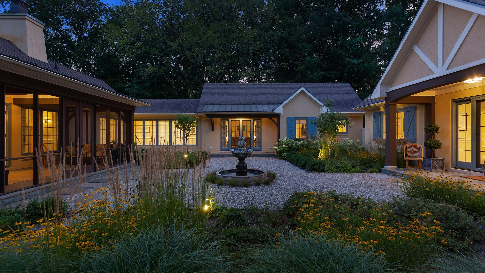

SERVICES
DRIFT provides landscape architectural design services for residential, institutional, commercial, and public projects, from early site planning and concept design through permitting, construction documentation and implementation.

PROJECT TYPES
DRIFT draws on more than two decades of professional experience working independently and as part of multidisciplinary teams on projects ranging from private residential landscapes to complex public infrastructure.
PROCESS
01 — LISTEN
Site
conditions, project goals, site program, opportunities + constraints.
02 — EXPLORE
Ideas, spatial organization, materials, planting +
character.
03 — DEVELOP
Refine the preferred design and coordinate technical
requirements.
04 — DOCUMENT
Prepare drawings and specifi cations appropriate
for permitting, pricing + construction.
05 — IMPLEMENT
Assist with permitting, bidding, contractor
coordination + construction observation.


EVERY PROJECT IS DIFFERENT
The appropriate scope depends on the site, project complexity, jurisdiction and desired level of involvement. DRIFT develops a project-specifi c scope following an initial conversation and review of available site information.
Projects may also require surveyors, arborists, architects, engineers, or other specialists. DRIFT can help identify these needs and coordinate with the broader project team.
FEES
Fees are developed based on project scale, complexity, schedule and scope of services. Depending on the project, services may be provided on a fixed-fee, hourly or phased basis.